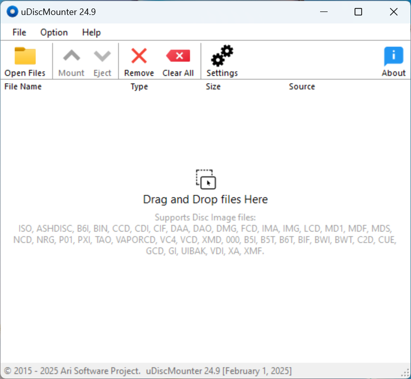
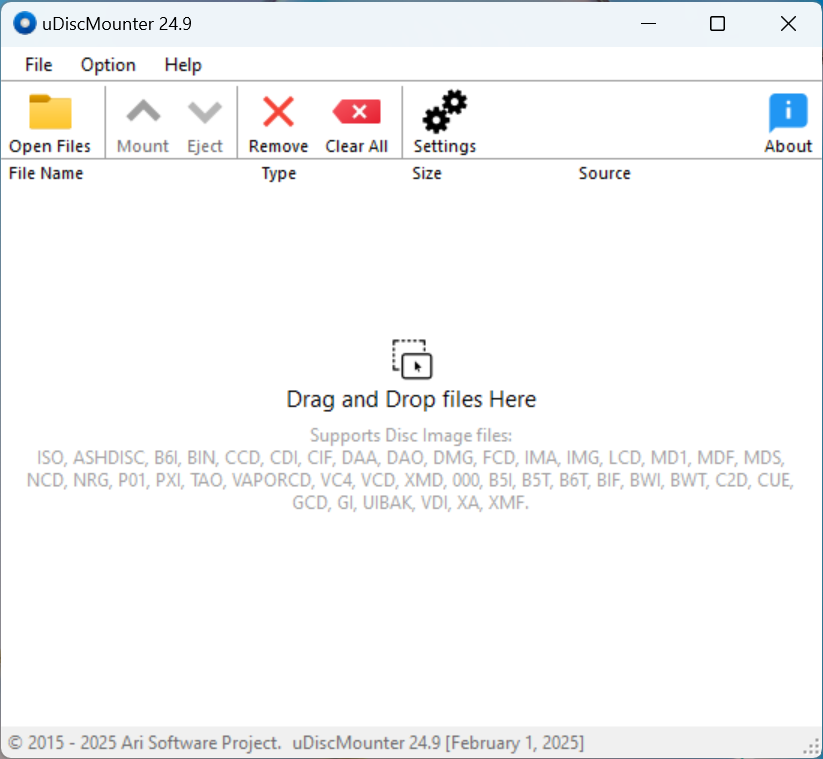

1.0.主對話框
主視窗顯示磁碟映像檔的列表，包含 檔案名稱、類型、檔案大小、檔案來源 資訊。您可以通過點擊欄位標題來排序列表。

控制按鈕（開啟檔案、掛載、彈出、移除、清除所有、設定、關於）位於列表上方。這些按鈕根據當前磁碟映像檔所能執行的操作而顯示或隱藏。
|
支援 uDiscMounter 是一款用於管理虛擬磁碟並掛載磁碟映像檔的工具，支援 Windows 作業系統中的多種格式。它支持幾乎所有已知的 CD/DVD 映像檔格式，如 .ISO, .BIN, .IMG, .CIF, .NRG, .MDS, .CCD, .BWI, .ISZ, .DMG, .DAA, .UIF, .HFS 等等。通過 uDiscMounter，使用者可以輕鬆掛載並管理各種磁碟映像檔，而不需要實體硬體，從而更快、更高效地訪問映像檔中的內容。
1.0.主對話框 主視窗顯示磁碟映像檔的列表，包含 檔案名稱、類型、檔案大小、檔案來源 資訊。您可以通過點擊欄位標題來排序列表。  控制按鈕（開啟檔案、掛載、彈出、移除、清除所有、設定、關於）位於列表上方。這些按鈕根據當前磁碟映像檔所能執行的操作而顯示或隱藏。 2.0 檔案操作 有多種方式可以將檔案載入 uDiscMounter，最常見的方法是直接使用 開啟檔案 按鈕，該按鈕位於磁碟映像檔列表的上方。
拖曳與放置： 在檔案總管中選擇要開啟的檔案，然後拖動到 uDiscMounter 並放開。 檔案關聯： 這是將磁碟映像檔開啟到 uDiscMounter 的最快方法，只需雙擊您要開啟的磁碟映像檔。 如何將磁碟映像檔與 uDiscMounter 關聯：
3.0 掛載與彈出 使用 uDiscMounter 掛載磁碟映像檔很簡單，您只需要按照 檔案操作 中的描述來開啟磁碟映像檔。如果磁碟映像檔已經開啟，請點擊您要掛載的磁碟映像檔，然後點擊 掛載 按鈕，接著會顯示一個資訊對話框，顯示磁碟映像檔的資訊以及掛載目標的虛擬磁碟。
若要卸載磁碟映像檔，您可以通過 Windows 檔案總管 右鍵點擊已掛載的虛擬磁碟並選擇 彈出。或者，您也可以通過 uDiscMounter 程式，點擊 彈出 按鈕，然後選擇先前掛載的 虛擬磁碟。 4.0 虛擬磁碟 新增虛擬磁碟數量：進入 設定 菜單，選擇 虛擬磁碟數量 區域，然後指定所需的數量，點擊 設定 按鈕以應用，並記得 重啟電腦 以使更改生效。 移除虛擬磁碟：要移除虛擬磁碟，請開啟 設定 菜單，然後選擇 移除磁碟機。 重新安裝虛擬磁碟：在 設定 菜單中點擊 安裝磁碟機。
© 2015 - 2025 Ari Sohandri Putra. 保留所有權利。 |
|
||||||||||||||||||||||||||||||||||||||||||||||||||||||||||||||